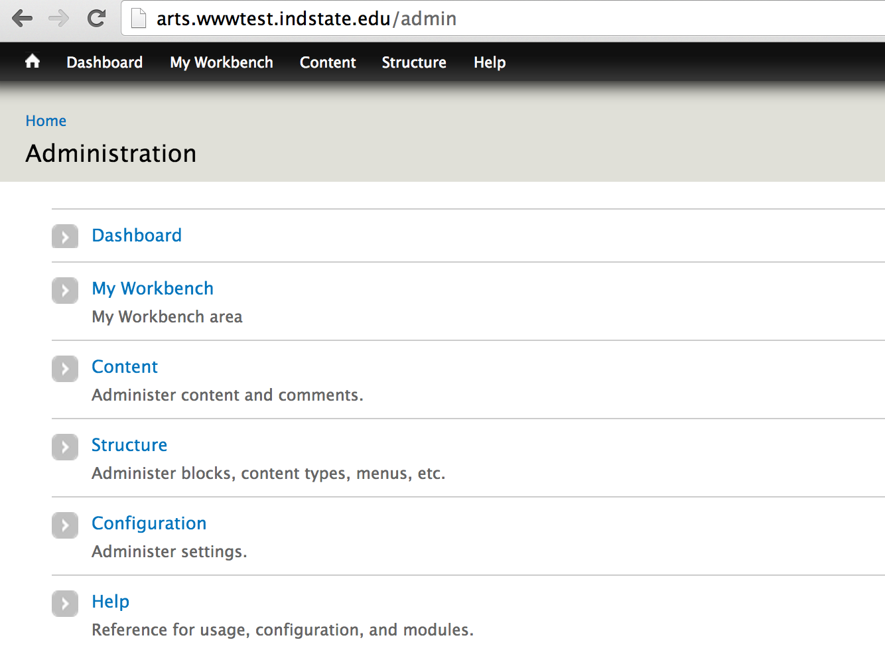
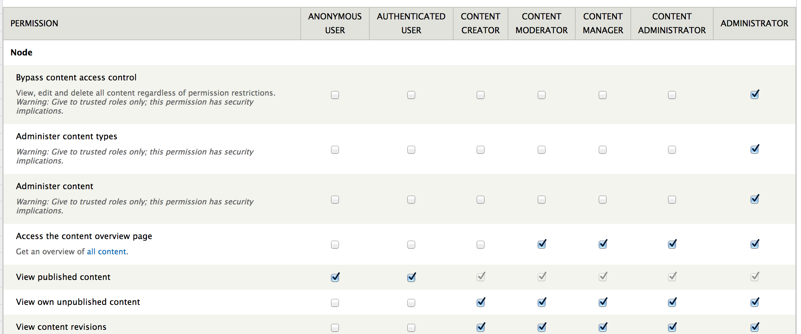
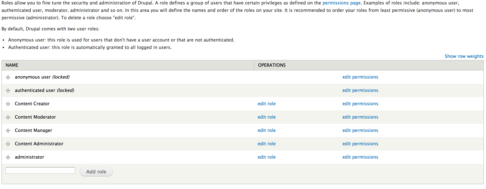

In Drupal there is always a path you can navigate to in order to log in.
/user
As a result, to log in to one of the college sites, you'd navigate to one of the following:
On the Indiana State University college sites there is no button or other navigational element that will help you get to the login page, so you'll need to commit this path to memory or bookmark it to get to it in the future.
Once on the login page, you simply enter your username and password. Built into Drupal is the ability to recover from a lost or forgotten password as well by using the "Request new password" tab.

If you have trouble logging in, you'll need to contact an admin to iron out the problem.
To log out of the site, there is a dedicated path:
/user/logout
There is also a button on the admin toolbar labelled "Log out".
It is important to log out from the site when not using it, and it's most imperative to do so when working on a shared machine or device so that others cannot hijack your account.
Once you're logged in, in most cases, you'll see an administrative toolbar at the top of the screen and you'll have access to the administrative backend interface. Any pages prefixed with /admin are part of the administrative interface, which has a different theme than the frontend site.

Each user has specific privileges that allow access to different parts of the site and ability to perform different administrative tasks. As a result, different users will see different things based on their set of privileges.
In Drupal, privileges are granted and defined with user permissions and user roles.
Just about all functionality has an associated individual permission. When a user is granted said permission, that user can perform the capabilities defined by the permission. Without the permission, the user cannot access or perform those capabilities. For example, there is a "View Published Content" permission which at a basic level determines whether or not users can view content in the site that has been published. Without this permission, users would not be able to see much of anything on the site.
The user permissions configuration utility is a massive list of very granular permissions that collectively determines what users can and cannot do.

Individual user permissions configurations are grouped together by user roles. Roles are arbitrary labels that define a grouping of permissions. Individual users are then assigned roles. By default, Drupal has three user roles: Anonymous, Authenticated, and Admin. The Anonymous role is automatically assigned to all users who are not logged in. The Authenticated role is automatically assigned to all users who are logged in. The Admin role defines the greatest level of permissions, usually reserved only for technical administrators with Drupal expertise.
Individual users can be assigned an unlimited number of roles, and when two role-based permissions configurations conflict, the more permissive one is used. For instance, an admin user who's logged in will automatically have at least two active roles, "Authenticated" and "Admin". The Authenticated role permissions are more restrictive, but the Admin role permissions will take precedence instead.

From time-to-time user roles and permissions need to be modified to suit the needs of the site and its users. This is an ability that is granted to the highest level administrative roles and will need to be discussed and tested with individuals possessing those roles in order to make changes. Modifying roles and permissions is a security concern as giving the wrong permissions to the wrong types of users can make the site vulnerable.
By default ISU College is setup with a number of roles (in addition to the Drupal default Anonymous, Authenticated, and Administrator roles) that have imagined use cases.
New roles can be created to accommodate new use-cases as needed. However, new roles should not be added frivolously because it increases the administrative overhead of users and permissions to a large degree, which if done in excess can become unwieldy to manage.
Created on January 6, 2014
Last modified on January 6, 2014
Authored by Kevin Champion